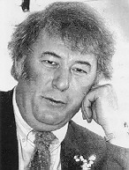

Faktaservice nr. 3 95/96, OKTOBER 1995
NOBELPRISEN I LITTERATUR:

Seamus Heaney, Irlands fremste nålevende poet
Det er ikke lenge siden Heaney i en britisk avstemning ble kåret til den mest populære engelskspråklige dikteren. Og nå hedres han med litteraturens høyeste utmerkelse som beløper seg til over syv millioner svenske kroner.Som arvtager etter Yeats er han en nasjonalskald som taler både til de litterært skolerte og til dem som nærmer seg hans verk uten akademiske forutsetninger. Han tilhører en eksklusiv klubb av poetiske giganter.
I likhet med rockens megastjerner trekker han hvert år fulle hus på opplesningsturneer fra den ene europeiske byen til den andre.
Lærer og professor
Heaney ble født i 1939 på en farm i grevskapet Derry i Nord- Irland som den eldste av ni søsken i et fattig miljø.Han forlot det dypt religiøse hjemmet i 1959 for å bo i et katolsk internat. Fra 1957 til 1961 studerte han i Belfast. Deretter arbeidet han som lærer i byen, inntil han i 1972 flyttet til Den irske republikk. På 1980-tallet var han gjesteprofessor i USA, ved Berkeley og Harvard. I dag er han bosatt i Dublin.
Han debuterte i 1965 med den pamflettaktige samlingen "Eleven Poems". Året etter kom hans første fullverdige bok, "Death of a Naturalist".
Brobygger
Som poet regnes gjerne Heaney blant de nye regionalistene. Hans dikt er trygt forankret i irsk jord og historie.I samlinger som "Door into the Darkness" (1969), "Wintering Out" (1972) og "North" (1975) hviler det et slags magisk lys over ordene, som over Irlands grønne marker i skumringstimen.
Gjennom hele hans diktning høres gjenklangen av dette spørsmålet: Hvordan skal Irland noensinne frigjøre seg fra den forferdelige volden som har slitt landet i stykker? Et land som samtidig har frembragt så mye skjønnhet ....
Noe klart svar gir han ikke.
Melankoli
I hans senere diktsamlinger - "The Station Island" (1984), "Hawn Lantern" (1987) og "Seing Things" (1991) - har de personlige opplevelsene og tilbakeblikkene fått et anstrøk av melankoli.I sine essays - samlet i "Government of the Tongue" (1988) og "The Redress of Poetry" (1995) - reflekterer Heaney som oftest omkring poesiens rolle i verden. For ham er poesien den høyeste uttryksform, men, han er ikke bare en alvorlig og dypsindig poet som har et brennende engasjement, han er humørfylt og ironisk og kan ta poengene på hælen i sin poesi såvel som i sin prosa.
Kilde: Gabi Gleichmann

[Innhold] [Info]
[Aftenposten hjemmeside] [Til Fakta hovedside]